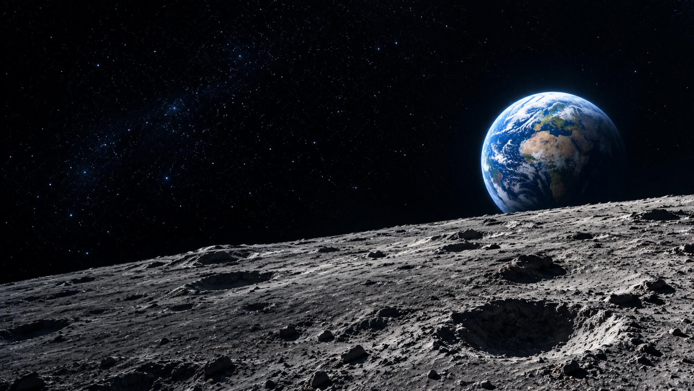

Abandoned but not Forgotten · NASA Space Apps Challenge 2026
Discover the machines, instruments and technology left behind on the Moon, Mars and beyond. Explore their stories, the missions behind them, and the discoveries they made possible.
Explore the Hardware →Discover the technology humans left behind on other worlds.
Loading missions…
A chronological view of the selected hardware.
Loading timeline…
Lunar Echoes is an educational digital museum created for the NASA Space Apps Challenge 2026. It tells the stories of hardware left on the Moon, Mars and in deep space — the technology, the discoveries, and why it still matters today.